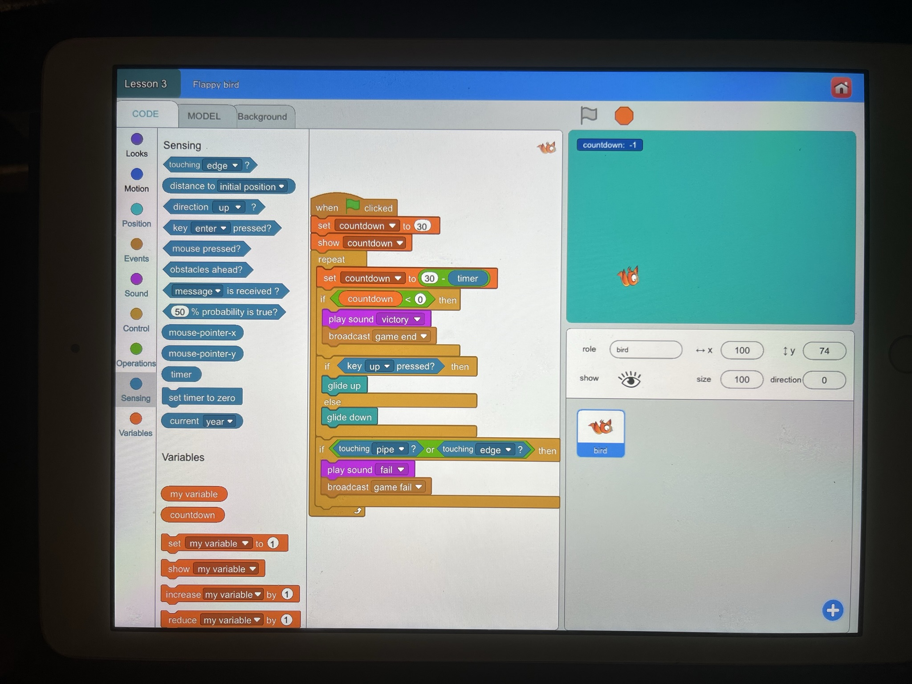
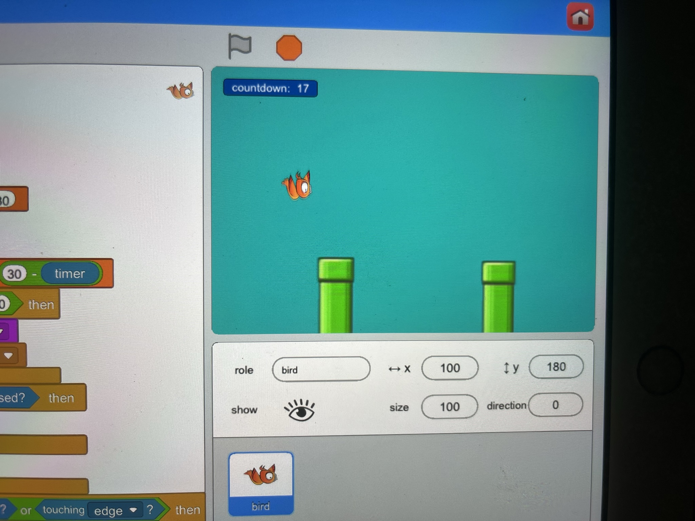
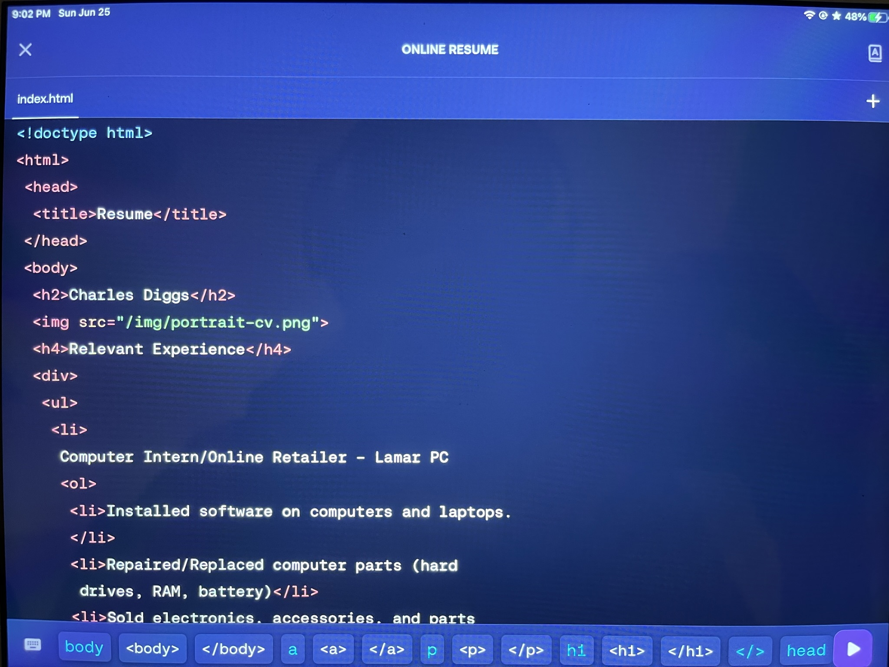
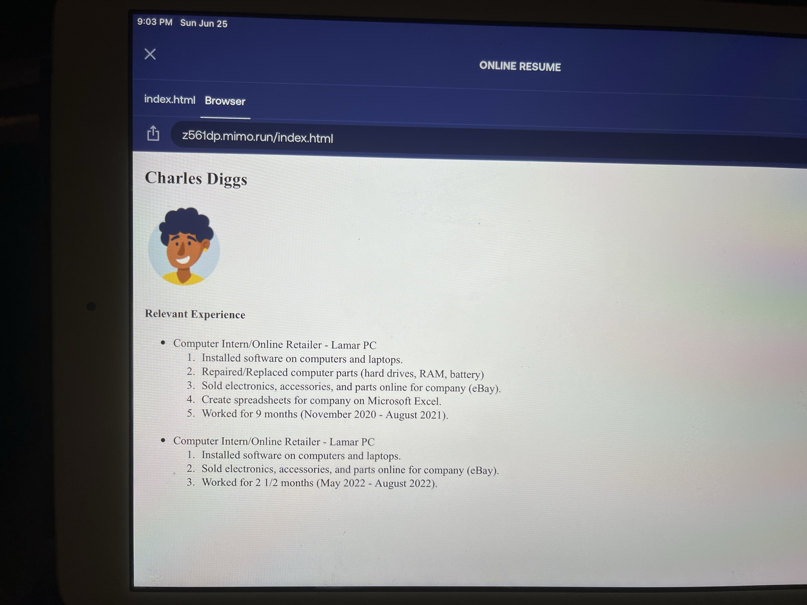
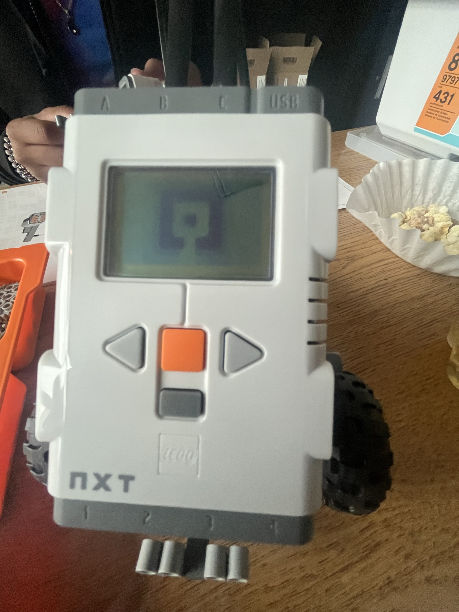
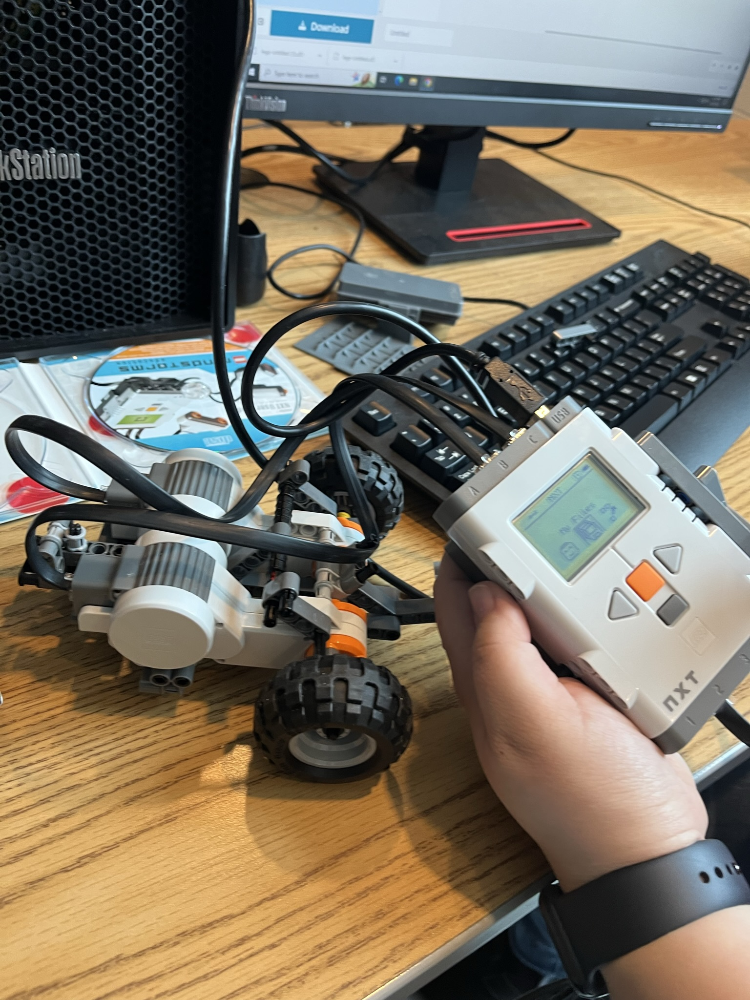

Look at my activites!!
Projects
Home Page
About
Contact
This page showcases the activities I have done throughout my time in IT!! It is a current page that is updated as I do more projects in IT.
Flappy Bird
The Flappy Bird project is classic for an intro to coding. I learned this tutorial from Code.org and Scratch. In the program, I create the functions of the entire game through block coding. This includes motion, text, and conditional statements.

Resume
I created a resume from coding app Mimo to show my work experience over time. I only have done one job position, so it was simple. I implemented the code to show the months and years I've been at my job. Mimo provided the profile image, but I manually entered the code.a

Robotics
In Coding Club, my advisor had access to Lego NXTs to build and program robots. This was an extensive progress, considering the kit is outdated and is not a recent product. Although, we were able to finish creating one and ran test programs.

Class Grade Calculator
The class grade calculator is a code written with Python to assist one in calculating a letter grade for a class. In the example, I decided to calculate my current letter grade for my Wake Tech web programming class.

Astrological Sign Calculator
The astrological sign calculator is a code written with Python to calculate someone's zodiac sign and their symbol based on their birthdate. In the example, I used a random birthdate to ensure the code was executed.